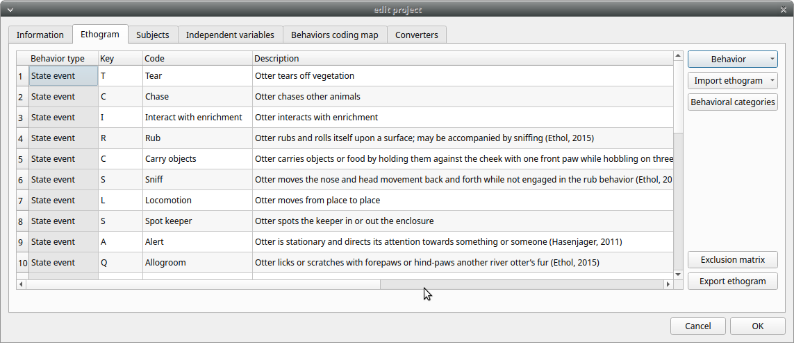
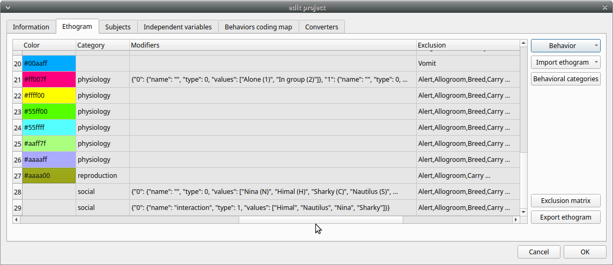

Create a project
The BORIS project file is the container for all information related to the project (except the media files). It contains the ethogram, the independent variables, the subjects definition, the behaviors coding maps, the converters and all observations data. The save menu option (File > Save project or Save project as …) will save the project on your local file system. You can also activate the automatic backup feature (see Preferences).
Very important
It is EXTREMELY IMPORTANT to do regular backups of your project files to prevent the lost of data. Software can be reinstalled but your data could quite possibly be lost for ever. Use an external drive or/and a cloud service.
BORIS allows creating an unlimited number of projects but only one project can be opened at a time.
A video tutorial about creating a project is available at https://www.youtube.com/watch?v=I97Dny5hFOE
To create a new project, under the menu File , select New project.
You can determine your project name by writing in the Project name field in the Information tab. Once the project will be saved, the Project file path will show the full path to your project file.
Date will automatically set on the current date and time, but you can alternatively set this info on your media date and time, or whatever you prefer.
Description can host all the relevant information about your project, can be also left empty.
Time format can be alternatively set to seconds or to hh ss.mss. This choice can be changed at anytime under File > Preferences > Default project time format.
ss.mss. This choice can be changed at anytime under File > Preferences > Default project time format.

Set an ethogram
See the Wikipedia ethogram definition.
Switching to the Ethogram tab, you can alternatively:
-
set your ethogram from scratch;
-
import an existing ethogram from another BORIS project;
-
import an ethogram from a JWatcher global definition file (.gdf).
-
import an ethogram from a plain text file


Set your ethogram from scratch
Clicking on the Behavior > Add behavior button you can add a new row in the Ethogram table and behavior type will be automatically set to Point event.
The cells with gray background can not be directly edited. You must double-click on them and then select a value. Behavior types
2 types of behaviors can be defined. Double-click on the cell and select the type of behavior:
- Point event behavior when the behavior has no duration.
-
The behavior will be coded by pressing the defined keyboard key (see below) or by double-clicking to the corresponding row in the Ethogram table.
- State event behavior when the behavior has a duration.
-
The behavior start and stop will be coded by pressing the defined keyboard key (see below) or by double-clicking to the corresponding row in the Ethogram table. These behaviors must have a start event and a stop event otherwise an UNPAIRED events warning will be reported when you will close the observation or during an analysis
You can switch between State event and Point event at your convenience with a double-click on the Behavior type cell. You can also add a Coding map to either a State event (State event with coding map) or a Point event (Point event with coding map; see the “Coding map” section for details).
An existing behavior can be duplicated using the Clone behavior button. Its code have then to be changed. On a selected behavior, click on the Remove behavior button to remove. The Remove all behaviors button will clear the Ethogram table. Both the above-mentioned operations must be confirmed when prompted.
Behavioral codes (Code column) can be sorted alphabetically by checking the Alphabetical order checkbox. Alternatively they can be sorted manually by using the Move up and Move down buttons.
Categories of behaviors
Defining categories of behaviors can be usefull for the analysis of coded events (for example the time budget analysis). Click the Behavioral categories button and add a the categories of behaviors. Behaviors can then be included or not in a defined category.